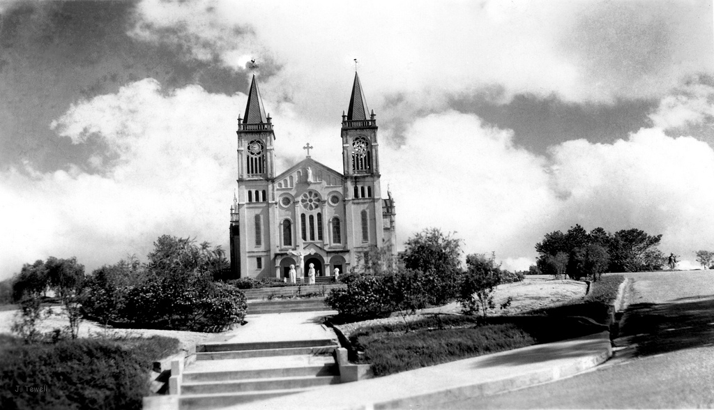
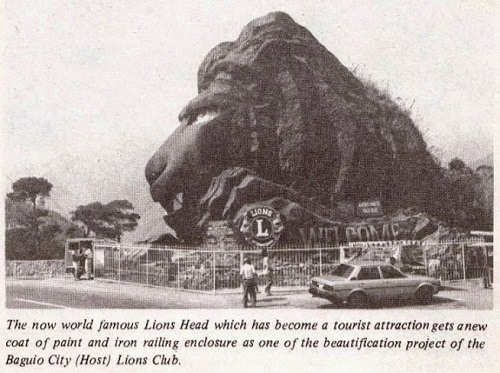

When Baguio was an American mining and recreational town, the citizens of the city worked side by side with the Cordillera natives.
It is precisely this rich blend of a Western landscape and tribal FIlipino culture that makes the City of Pines so interesting.
Baguio today is a melting pot of the Cordillera tribes, who like to refer to themselves as highlanders, as well as Filipinos from the lowland provinces of Luzon. A lot of the images and products of Baguio are of the 'Igorots' themselves still: woven cloths and baskets, wood carvings, and even wild ethnic food.
The Baguio art scene can only be described as thriving! With famous painter and Philippine National Artist BenCab and sculptor Ben-Hur Baguio Art & Artists Villanueva in residence. They lead a whole pack of young artists whose works now enjoy a growing market.
Baguio music thrives, too, with a host of local bands and singers who have spread their wings to hotspots like Manila -- and beyond. Musicales, concerts and plays by visiting artists are a common occurrence in concert halls and during street festivals, the foremost of which is the Panagbenga, every February.
Feast your senses on the different colors and flavors of the City of Pines, take a peek into its history and bring home with you all the memories as souvenirs of this one-of-a-kind place on earth.
The following are some of the cultures of Baguio
Have your potrait done by any of the Baguio artists at the Botanical Garden Gallery or at Tam-awan Village. Ask them for available art workshop schedules, too. While at Botanical Garden, explore the native huts of different tribes and check out the giant statues of the different personages that are familiar to the Cordillera tribes.Visit the Cordillera Museum at Governor Pack Road, or go to Asin and check out the newly-opened Bencab Museum. Get a tribal tattoo in Session Road (henna tattoos also available). Visit the Camp John Hay Historical Core at what used to be Bell House (Commander's Cottage). It'll give you a look at the recreational facility during American time. Pose for a photo with real natives is full native dress at the Botanical Garden entrance. Visit the Woodcarver's Village at Asin Road and see the artists at work. It's a kilometer-long series of workshops and shops on both sides of the road. Stroll down Session Road in the early evening and check out recent works by budding craftsmen on display at the entrance to La Azotea building. And would you believe that in the Summer Capital one can view the first Philippine flag? The Aguinaldo Museum at Jungletown, run by the heirs of Emilio Aguinaldo who was the first president of the Philippines, has the flag on display, as well as other memorabilia.
 |
|  |
|  |
SOURCES:
GO BAGUIO | http://www.gobaguio.com/cultural-baguio.html#.WJXM-ht97IU
OLD CATHEDRAL | https://s-media-cache-ak0.pinimg.com/originals/68/42/06/684206f8cf1def8d98582a99aa2a5130.jpg
OLD SESSION | http://s441.photobucket.com/user/xfree9/media/1.jpg.html
OLD LION | http://www.filipiknow.net/wp-content/uploads/2014/09/Baguio-City-Lion-Head.jpg